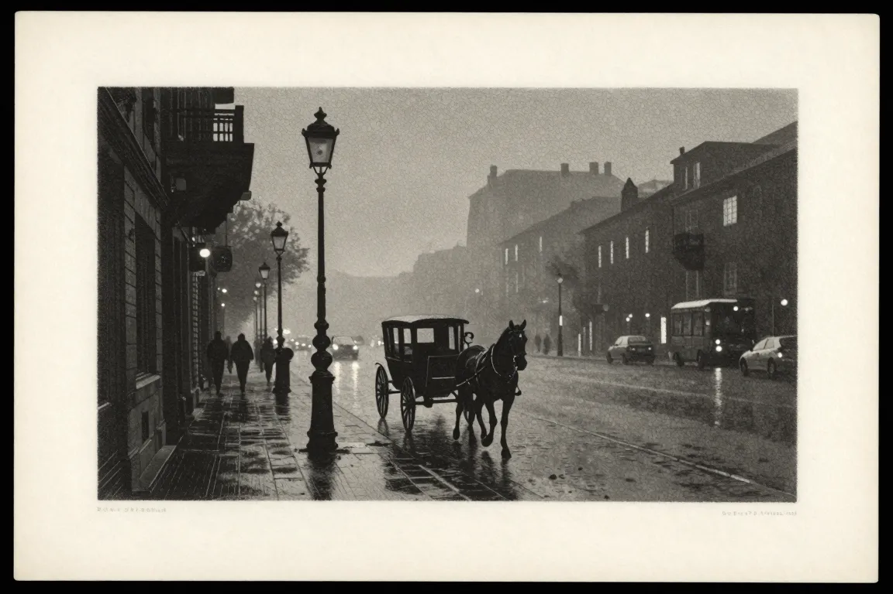

Позитив на углеродной бумаге переносят на медную пластину, которую травят через припылённое акватинтное зерно. Пластина печатает непрерывный фотографический тон глубокой насыщенной краской на тонкой папиросной бумаге, без видимого растра.

Главная идея
Фотография, вытравленная в меди через акватинтное зерно, печатается непрерывным тоном глубокой краской. Тогда она читается как оригинальный оттиск.
Принципы дизайна
Экспонируйте углеродную бумагу под позитивом, переносите её на медную пластину и травите в 3–5 ваннах хлорного железа.
Травите пластину через припылённое акватинтное зерно, чтобы в тоне не было точек.
Печатайте одной тёплой чёрной или коричнево-чёрной, протирая вручную.
Печатайте на тонкой японской папиросной или верже бумаге и сохраняйте след пластины.
Держите полную шкалу тонов: глубокий бархатный чёрный, мягкие средние тона и чистый свет.
Монтируйте тонкий лист на больший лист с полем 20–40 мм.